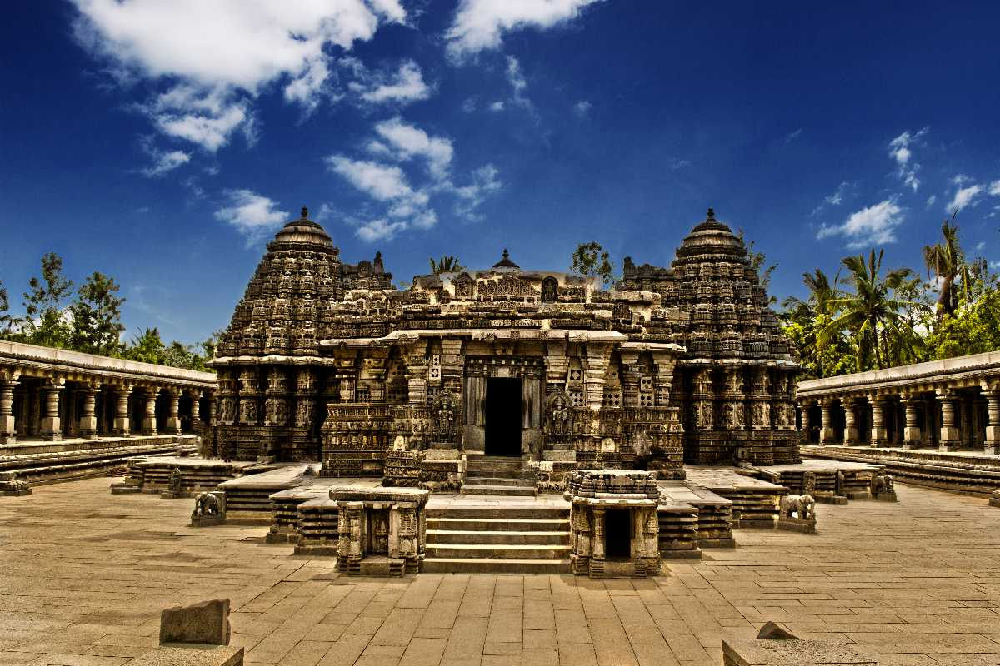
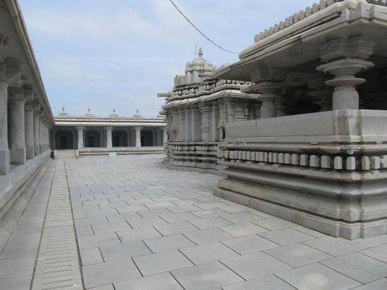

UDUPI
1.Anantha Padmanabha Temple


The ancient Sri Ananthapadmanabha Swamy temple is at Perdur, a village at a distance of 20 km from Udupi and 32 km
from Hebri in Karnataka. Perdur has gained prominence due to the existence of Sri Ananthapadmanabha Swamy temple.
The two-ft. high, very attractive idol of Sri Ananthapadmanabha at Perdur temple is adorned with a conch and a holy
disc in two hands and the symbol of Abhaya or protection from all evils and ills in one hand.
The lord Sri Anantha Padmanabha swamy idol sanctified in the Temple is of 2 feet height with Shanka Chakra and Abhaya
Hasta looks very beautiful and attractive .The stone inscription of 1458 in the Temple calls the deity as Janardhana
deva in the beginning and Ananta deva at the end.. However another inscription of 1520 has clearly called the lord
as Sri Anantha Padmanabha. The idol is covered by a carpet head from the backside .The vigraha is in its standing
position and said to be posed with powerful divine power.
Since the Temple include Rudra temple a Rudralinga is also installed in the sanctum .There is a Ganapati idol on a
pillar at Theertha mantapa and only after offering poojas to Ganapati here the Moola Murthy is being worshipped as
an age old tradition .Once the Temple surrounded by forest is now developed as Temple Town. An Arototsava katte
exists in front of the Temple and a Nagabramha stana nearby. A Gramadevata Mariyamma Temple in the vicinity and
a Kunjadakatte at which the lord Sri Anantha Padmanabha utsavamurti is being worshipped during Rathotsava period
2.Anantheshwara Temple


Udupi Anantheshwara Temple is a historic Hindu temple dedicated to Lord Ananteshwara Parashurama (an avatar of Vishnu).
The Anantheshwara temple is located in Udupi, India. The temple is a unique temple where Parashurama is worshiped in the
form of Shiva Linga. Writer Roshen Dalal says, "According to texts, the city formed part of Parashurama Kshetra, the area
is said to be claimed by Parashurama from the sea. Legends state that a king name Ramabhoja worshipped Parashurama here
in the form of Shiva Linga, which then manifests itself on a silver seat (rajata pitha). Thus in Sanskrit texts, the
city is known as Rajata Pitha".
The temple was renovated during the reign of the Alupas in the 8th century C.E. and is considered among the oldest in the
Tulu Nadu region. Ananteshwara Temple is close to Chandramouleshwara Temple, the temple dedicated to Lord Shiva.
The temple is adjacent to the more famous Udupi Sri Krishna Matha established by saint Shri Madhvacharya, who preached
Dvaita philosophy in Udupi.
3.Koodlu Theertha Falls

The Koodlu Theertha is a spectacular waterfall that descends from a height of about 300 feet. It plunges straight into
a pond. Legend has it that thousands of years ago sages used to meditate near the place where the pond exists today.
As such, the local people consider the water of the pond to be very holy.
Apart from the scenic beauty of the water taking a deep plunge from the mountains above, the place is also known for
its serene atmosphere. The calm and tranquillity found near the waterfall is only disturbed by the roar of the water
falling from the high position. Else, the uninhabited area is a place that is far removed from the hustle bustle of
city life and nature seems to rule over the place.
4.Shri Krishna Temple

Udupi Sri Krishna Temple is a famous Hindu temple dedicated to god Krishna and Dvaita Matha located in the city of Udupi
in Karnataka, India.The matha area resembles a living ashram, a holy place for daily devotion and living. Surrounding
the Sri Krishna Temple are several temples namely the Udupi Anantheshwara Temple which is over a 1,000 years old.
The daily sevas (offerings to god) and administration of the Krishna Mutt are managed by the Ashta Mathas (eight monasteries).
Each of the Ashta Mathas performs temple management activities for two years in a cyclical order. They are collectively known
as the Ashta Mathagalu in Kannada language.The Krishna Matha is known throughout the world for its religious customs,
traditions and learning in Dvaita or Tatvavaada philosophy. It is also the centre of Daasa Sahitya, a form of literature that
originated in Udupi.
5.


The Chennakesava Temple, also referred to as Chennakeshava Temple and Keshava Temple, is a Vaishnava Hindu temple on the
banks of River Kaveri at Somanathapura, Karnataka, India. The temple was consecrated in 1258 CE by Somanatha Dandanayaka,
a general of the Hoysala King Narasimha III. It is located 38 kilometres (24 mi) east of Mysuru city.
A few of the significant historical dates and circumstances around the Kesava temple is inscribed in eight stones
in different parts of South India. Four of the inscriptions are found on soapstone slabs at the entrance of the temple.
Two inscriptions are found in the ceilings of the veranda that surrounds the temple, one near the southeast corner and
the other about the northwest corner. Another inscription is found near Harihareshwara Temple on the banks of the
Tungabhadra River. The eighth inscription is found in the Shiva temple at the periphery of the original land grant,
the Panchalinga temple.
6.Venugopala Swamy Temple

